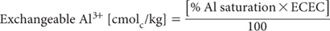

There is evidence that a certain amount of exchangeable Al3+ can be tolerated by most plants. When a tolerable level of Al is known or assumed, it is possible to calculate a lime requirement based on the amount of exchangeable Al3+ to be neutralised, particularly for soils with low permanent charge and relatively high pH dependent (variable) charge (Kamprath 1980). Generally, it is necessary to add more agricultural limestone than that calculated on a chemical equivalent basis (Cochrane et al. 1980). Kamprath (1980) gives examples where 1.5 to 3.3 times the equivalent rate have been used. The formula (Cregan 1980; adapted from Kamprath 1978; used to estimate lime requirement in this method) is as follows:
Lime requirement (kg/ha) = [cmolcAl/kg to be neutralised × 1300]
where:
• 1300 is a factor that assumes a soil bulk density of 1.3 g/cm;
• the calculation applies to limestone with an AV of about 90% (see Method 16A1, Note 1);
• the calculation incorporates an allowance for incomplete neutralisation; and
• Al3+ to be neutralised = [(Exch. Al3+ present) – (Exch. Al3+ at maximum non-toxic level)] (both as cmolcAl/kg).
A complication in applying the above calculation is that tolerable levels of Exch. Al3+ are commonly expressed in terms of % Al saturation of the CEC: e.g. 20%. The Exch. Al3+ content of the soil segment under consideration and the Exch. Al3+ concentration corresponding to the tolerable % Al saturation in the same soil segment must be established initially from the relevant ECEC (Method 15J1) and % Al saturation (Method 15O1) as follows:

where
• ECEC is expressed as cmolc/kg, and
• all values relate to the same profile segment.
Lime requirement (kg CaCO3/ha 10 cm)
{1300 × [cmolcAl/kg in the soil segment] – [cmolcAl/kg corresponding to maximum non-toxic level]}
where:
• rates of lime are additive for each 10 cm profile segment under consideration.
Make appropriate adjustments if soil bulk density varies from 1.3 g/cm3 and/or if the expected efficiency of agricultural limestone varies from 90%. See Method 16A1, Note 1 for guidance on calculating the AV of this material.
Report lime requirement (kg CaCO3/ha 10 cm) on an air-dry basis.